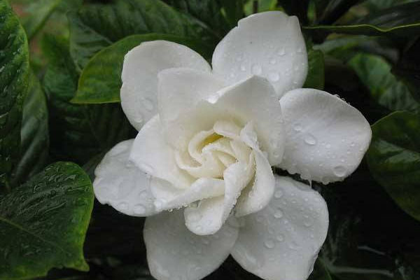
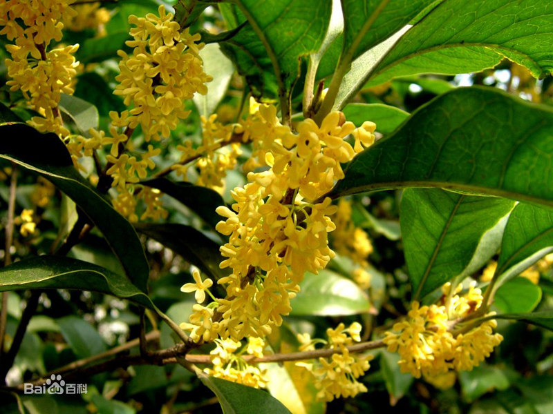
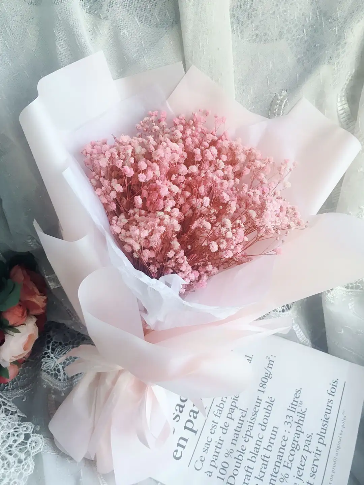

栀子花，又名栀子、黄栀子。属双子叶植物纲、茜草科、栀子属常绿灌木，枝叶繁茂，叶色四季常绿，花芳香，是重要的庭院观赏植物。 单叶对生或三叶轮生，叶片倒卵形，革质，翠绿有光泽，浆果卵形，黄色或橙色。栀子花叶色四季常绿，花芳香素雅，绿叶白花，格外 清丽可爱。
栀子花
主要分布在贵州、四川、江苏、浙江、安徽、江西、广东、云南、福建、台湾、湖南、湖北等地。栀子花，又名栀子、黄栀子。属双子叶植物纲、茜草科、栀子属常绿灌木，枝叶繁茂，叶色四季常绿，花芳香，是重要的庭院观赏植物。 单叶对生或三叶轮生，叶片倒卵形，革质，翠绿有光泽，浆果卵形，黄色或橙色。栀子花叶色四季常绿，花芳香素雅，绿叶白花，格外 清丽可爱。

桂花是中国传统十大名花之一，集绿化、美化、香化于一体的观赏与实用兼备的优良园林树种，桂花清可绝尘，浓能远溢，堪称一绝。 尤其是仲秋时节，丛桂怒放，夜静轮圆之际，把酒赏桂，陈香扑鼻，令人神清气爽。
桂花
桂花是中国木犀属众多树木的习称，代表物种木犀，又名岩桂，系木犀科常绿 灌木或小乔木，质坚皮薄，叶长椭圆形面端尖，对生，经冬不凋。花生叶腑间，花冠合瓣四裂，形小，其园艺品种繁多，最具代表性的 有金桂、银桂、丹桂、月桂等。桂花是中国传统十大名花之一，集绿化、美化、香化于一体的观赏与实用兼备的优良园林树种，桂花清可绝尘，浓能远溢，堪称一绝。 尤其是仲秋时节，丛桂怒放，夜静轮圆之际，把酒赏桂，陈香扑鼻，令人神清气爽。

满天星用途广泛，集观赏、药用于一体。由于它花型小、浅色、花姿蓬松具立体感，气质高雅清秀，给人以朦胧感，花序群体效果极佳， 是重要的陪衬花材，为当今最流行的切花之一，虽然价格昂贵，但十分畅销。生活在喜温暖湿润和阳光充足的环境 [1] ，生长适温为 15C～25C，在 30 C以上
满天星
满天星(Gypsophilapaniculata)，原名为重瓣丝石竹，原产地中海沿岸，别名锥花霞草、宿根满天星、锥花丝石竹、圆锥花丝石竹 、丝石竹，为石竹科石头花属多年生植物。满天星用途广泛，集观赏、药用于一体。由于它花型小、浅色、花姿蓬松具立体感，气质高雅清秀，给人以朦胧感，花序群体效果极佳， 是重要的陪衬花材，为当今最流行的切花之一，虽然价格昂贵，但十分畅销。生活在喜温暖湿润和阳光充足的环境 [1] ，生长适温为 15C～25C，在 30 C以上